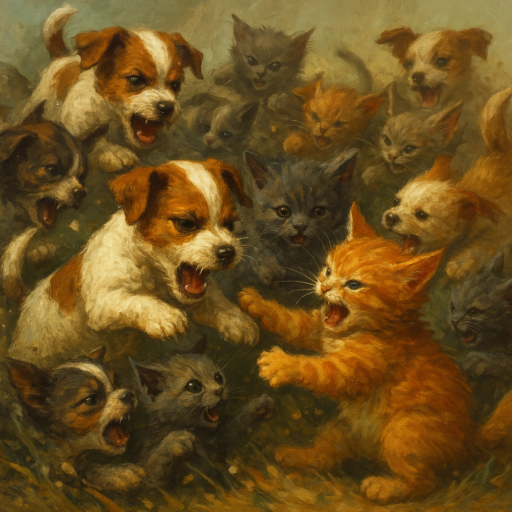

The UOC Observer
H'Online Since 2024 Fwend

The morning at UOC began with a cheery farewell.
The humans were leaving.
“Goodbye! Have a wonderful time!” the Legionnaires called.
“Nuffink is gonna happen here—we swearsies!”
The gates slammed shut behind them.
Hon let out a long, dejected sigh.
Then he straightened.
“H’organise the defence,” he muttered.
Hon pulled together what was left: the remaining Legionnaires, the Daisies, the Behbej Bezerkers, even H’Allen—silent, stoic, unreadable. It was a last stand, and they were ready to fight. There was no more pretending, no more hope to hold onto. Just fight or break.
In the hedgerows, the Hippies watched, unseen. Not invited. Not trusted.
“Told ya,” muttered one, dragging on his vape, eyes lost in the distance. “Same every year.”
The battlefield came to life with the shrill howls of battle.
The Daisies charged at Muldoon, their once-brother, now a mere shell of the dog they had known. He stood still, like a cold rock, his eyes fixed only on the Emperor. No emotion. No hesitation. Obedience was his sole creed now. The Daisies crashed into him, but their strikes were slow, unsure. He didn’t even flinch. He had become a mere shadow, a tool of the H’Emperor.
Meanwhile, the Behbej Bezerkers launched themselves at the Kittling Bezerkers. Small paws, wild yaps, ribbons of fur flying. The noise was deafening—fur, teeth, and claws. But the Kittling Bezerkers were more, they were disciplined, organized, and they quickly swarmed the Behbejs, knocking them over with ease. Their tiny bodies scattered like leaves in the wind.
Through all the chaos, Post Chance walked calmly, whistling as if there wasn’t a war being waged just a few feet away. His postbag hung from his side, bouncing with each step.
“Where are you going?!” shouted Hannibal, his voice dripping with frustration.
“To deliver,” said Post Chance, without breaking his stride, his eyes locked ahead.
“H’mad,” growled Hannibal.
“H’admirable,” whispered Hon, watching him go with a tinge of respect.
Then came the moment the Legionnaires feared.
The H’Emperor raised one lazy paw. His eyes were calm, as if nothing mattered.
And from the heavens, descending on the chaos below, came Commander Scratchulus aboard the Dashing Daisy, flanked by the Stooges. The ship—once a beloved treasure of the Pirates—now gleamed with H’Empjire insignia. A fearsome sight, made all the worse by the squeaky bombs that rained down from above, vaporizing biscuits and sending shockwaves through the ground.
The Legionnaires stumbled, trying to shield themselves, but the force of the attack was too much. They scattered. Their lines broke. Their morale shattered.
The Pirates, desperate to reclaim their beloved Daisy, launched an assault, charging toward the ship in their last-ditch effort. But they were swatted aside like flies. The ship didn’t care about them anymore. One Pirate, watching his comrades fall, shouted in despair, “She don’t even purr the same anymore!” The Daisy, now a tool of war, no longer held any trace of its past life.
Then, as if the chaos needed one last absurdity, a flash of blue light streaked across the battlefield.
“I did it! I’m home!” the Chronoterrier shouted, his body flickering in and out of time, glowing with a strange energy.
He appeared from a rip in time, only to be struck by a wheel from the Dashing Daisy, and with a sickening crunch, he was gone. The scent of mint lingered in the air, along with the faint sound of “Heck heck heck…” as he vanished into nothingness.
With the Chronoterrier gone, the battlefield collapsed into chaos. Legionnaires deserted. The Daisies scattered in fear. Shields dropped. The H’Empjire’s forces had broken them.
But Then!!